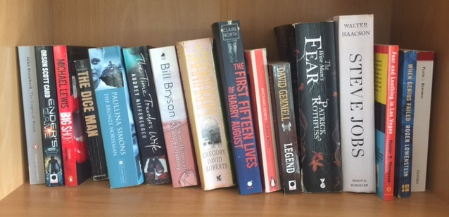

I’ve been building a bookshelf of 100 books for the last 10 years — books that can be easily recommended — for the “My daughter, when you’ve read these you will be a woman” type recommendation.
What’s nice about this, is that when I read a book I think “makes the cut”, I then go back and read the book it’s going to replace, again. To make a decision.

A snapshot of a few from the shelf
Here’s the list at the moment, in no particular order:
- Charlie Mike,
- A Short History of Progress,
- King Rat,
- The Black Swan,
- The Bronze Horseman,
- The First Tycoon: The Epic Life of Cornelius Vanderbilt,
- Catch Me If You Can,
- Value Investing,
- A Random Walk Down Wall Street,
- Reminiscences of a Stock Operator,
- A Good Keen Man,
- Fear and Loathing in Las Vegas,
- Cod,
- Salt,
- The Rise and Fall of the Third Chimpanzee,
- A Short History of the Twentieth Century,
- Against the Gods,
- The Ascent of Money,
- Sherlock Holmes,
- 1984,
- The Time Traveler’s Wife,
- The Saga of Recluce,
- Catch 22,
- When the Lion Feeds,
- The Power of One,
- Birds of Prey,
- Zero to One,
- One Day in the Life of Ivan Denisovich,
- Titan: The Life of John D. Rockefeller,
- The Bourne Identity,
- The Horse Whisperer,
- The Hobbit,
- The Old Man and the Sea,
- Forrest Gump,
- The Tipping Point,
- Heroes: A History of Hero Worship,
- The Clan of the Cave Bear,
- Engineers’ Dreams,
- Republic,
- The Great Gatsby,
- The Lord of the Rings,
- The Picture of Dorian Gray,
- The Name of the Wind,
- Status Anxiety,
- The Grapes of Wrath,
- The Art of War,
- Power of the Sword,
- Open Society,
- Made in America,
- Killing Floor,
- The Consolations of Philosophy,
- A Brief History of Economic Genius,
- Outliers,
- The Agony and the Ecstasy,
- Shantaram,
- When Genius Failed,
- A Short History of Nearly Everything,
- The Catcher in the Rye,
- Chickenhawk,
- The Intelligent Investor,
- Sushi for Beginners,
- The Pillars of the Earth,
- Captain Corelli’s Mandolin,
- The Burning Shore,
- The Eagle and the Raven,
- Sapiens: A Brief History of Humankind,
- Cross Stitch,
- The Godfather,
- South,
- Sophie’s World,
- Dracula,
- If This Is a Man,
- The Sleepwalkers,
- The Weather Makers,
- Bastards I Have Met,
- The Alchemist,
- For Us, the Living,
- Fooled by Randomness,
- A Farewell to Arms,
- A History of the World in 6 Glasses,
- The Andromeda Strain,
- Adventures of Huckleberry Finn,
- Gone Girl,
- The Count of Monte Cristo,
- 2001: A Space Odyssey,
- The Martian,
- How Britain Made the Modern World,
- The Covenant,
- The Swiss Family Robinson,
- Dune,
- On the Road,
- Trainspotting,
- The Fountainhead,
- The Inevitable,
- A Painted House,
- The Blade Itself,
- Steve Jobs,
- Ender’s Game,
- The First Fifteen Lives of Harry August,
- Flash Boys,
I’ll keep reading and improving this list of 100 books, and will update it here from now on.